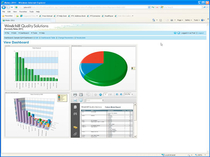
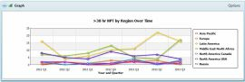
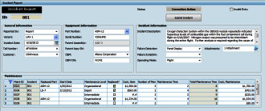
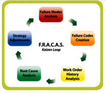
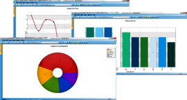

Eight Steps to a Successful FRACAS Implementation
The need to efficiently track, analyze, and correct problems found during product development, testing, and operation spans all industries and classifications, including hardware, software, process management, and services in both government and commercial sectors. While general guidelines exist for implementing a Failure Reporting, Analysis, and Corrective Action System (FRACAS), these guidelines fail to address the organizational issues that pose a risk to the ultimate success of the FRACAS.
Three main issues usually surface when FRACAS implementations are being deployed:
- Complex organization interaction
- Lack of prioritized goals
- Inefficient and ineffective data tracking
Each of these issues affects the FRACAS process in several ways.
Issue 1: Complex organization interaction
Because a dozen or more groups may be involved in contributing data to or using the data collected in a FRACAS, the process can become quite complex, especially when many of these groups may need to be involved in the process at multiple points. As the complexity of the process increases, the time between opening and closing an incident also increases. If the process becomes too complex, issues can be "lost" or never thoroughly addressed. This not only compromises the analysis of trends, but can also result in the eventual breakdown of the process.
Issue 2: Lack of Prioritized Goals
While there are many reasons for implementing a FRACAS, three common ones are:
- Compliance with customer requirements and standards
- Gaining insights into the reliability of products
- Improving the next generation of product designs
Oftentimes, the upfront planning and funding necessary for a proper FRACAS implementation do not occur, leaving companies scrambling for resources late in the product development cycle. To remedy this situation, many companies make use of a general purpose tool already available to them, such as Microsoft Excel or Microsoft Access, with the intent that this temporary solution will be replaced by a full-featured FRACAS as soon as resources are available.
Unless this occurs relatively quickly, a minimal FRACAS becomes the standard, resulting in poor efficiency, insufficient information, and a lack of cohesiveness. While the customer requirement for a FRACAS may be satisfied by this "temporary" solution, gaining insights into product reliability or improving the next generation of product designs becomes virtually impossible to achieve. To gain such insights or design improvements, all functional groups who are to use the FRACAS must collectively identify and prioritize the specific goals that they have for the system and then determine the system outputs necessary to assess whether these goals are being met.
Issue 3: Ineffective and Inefficient Data Tracking
Gathering the right data and not all available data is an important aspect of any FRACAS. When data entry takes too long or is too cumbersome, analysts are likely to skip fields when logging problems or even fail to enter less critical problems at all! Often, information gathering is not standardized, which makes the analysis of the data a time-consuming, manual process. When data collection is not organized or is inconsistent, the usefulness of the data decreases considerably.
Eight Steps to a Successful FRACAS Implementation
The following eight-step method has been developed to address the organizational issues described above. Performing these eight steps enables you to deliver a high-performance FRACAS. This methodology, has been effectively used in several scenarios. It can easily be modified to fit any situation.
Step 1: Define the Goals and Success Factors
The foundation for a successful FRACAS implementation rests on how well the primary goals are defined. To this end, each functional group must identify the specific goals that they have for the FRACAS. Typical goals include lowering maintenance costs, improving overall reliability, and improving next generation product design. Once each group has set goals, one representative from each group and an executive or management representative must meet to review, consolidate, and prioritize these goals.
During this meeting, a realistic and quantifiable success factor should be attached to all mutually agreed upon goals. For example, if a goal is to lower maintenance costs, a quantifiable success factor may be to reduce these costs by 10% over the next 12 months. Once attendees sign off on goals and success factors, the FRACAS "owner" should communicate them back to the members of all groups.
Step 2. Define the Output
Based on these goals, each team must define the outputs that they require from the system to assess whether or not the success factors assigned to them are achieved. Typically, output is defined in terms of calculations, charts, graphs, and reports. To ensure that the number of outputs requested remains manageable, each output should be mapped to a goal and success factor.
Step 3. Map the Process/Workflow
Through a series of meetings and interviews with users, determine the workflow that each group expects to follow and then develop a consolidated process diagram that best simplifies the entire FRACAS process so that needed outputs can be generated in a timely manner. Because too many steps can negatively affect the process, work to ensure that workflow steps are minimized so that the process is not too complex.
Step 4. Map Data Required and Input Method
Using output requirements and the consolidated process diagram, determine the minimum number of data fields to support each step of the workflow process. The goal is to determine what data is important, eliminating the collection of data that has no purpose. Once data fields are established, determine how they will be populated as well as where users will see them. Population methods include pre-population based on previous user input, selection from choice lists, direct data entry, and even bar code entry. Also make sure to establish rules for data entry, including what information is required and how it is to be kept clean and consistent.
Step 5. Implement a Prototype FRACAS
There are three levels of tools for supporting a FRACAS:
- General purpose tools
- Workgroup applications that provide full-feature FRACAS support to small groups of users
- Enterprise applications that provide full-feature FRACAS support for large amounts of data and many users
Step 6: Accept Feedback and Modify FRACAS
After the FRACAS prototype is ready, have users put it through its paces, determining whether its outputs will indicate if goals and success factors are met. You are likely to find areas that need additional work. This is the time to accept constructive feedback and make the modifications necessary. Prior to proceeding to system rollout, have the group representatives and the executive or management representative sign off on the system to demonstrate their approval and continued support.
Step 7. Rollout and Train
Determine if the system will be rolled out to all users at once or whether a phased approach will be used. Providing that you have the time, a phased approach is much preferred. As the various groups of users are trained and brought online, the issues that they uncover can be better addressed. Additionally, the implementation and training teams are able to refine their efforts to provide better support for later groups.
Step 8. Continue to Change
Based on user feedback, continual change to your FRACAS can and should be expected. As business objectives and processes change, your FRACAS needs to evolve to support these changes. Throughout this process, it is important to validate all changes to ensure that they are consistent with the overall goals that were initially established. This will ensure a high-performance and functional FRACAS for many years to come.
Windchill FRACAS Solution
Windchill FRACAS provides the foundation for implementing a fully-featured FRACAS process within your organization. The Windchill FRACAS tool supports all the best-practice initiatives for implementing a successful corrective action system based on the eight-step methodology outlined above.
Crimson Quality also provides comprehensive Consulting Services to aid in developing your FRACAS implementation plan and adapting this eight-step approach to your needs. For more information, click here.
